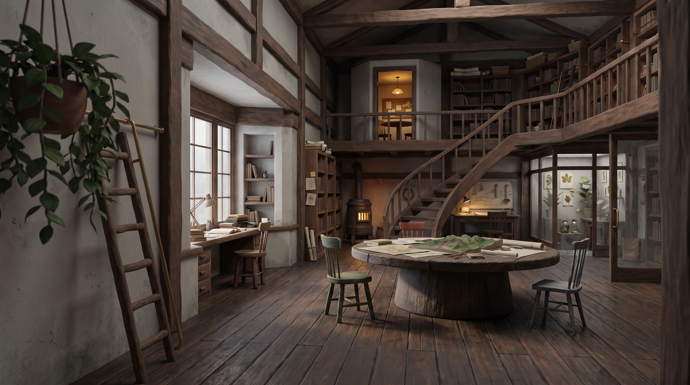

공간 재설계
층이 있는
기록 연구 공방
서재, 원탁, 회의실, 개인 제도대와 표본실이 높이와 빛으로 이어지는 새 공간입니다.
닫힌 실내
두 층
평평한 순환 바닥
먼저 공간을 봅니다
같은 방의 구조, 낮, 비 오는 저녁
세 화면의 카메라와 배치는 같습니다. 구조를 먼저 보고, 빛과 재질이 더해져도 동선이 남는지 비교할 수 있습니다.

차가운 창빛과 따뜻한 작업등이 함께 들어오는 낮
동선은 원탁에서 막히지 않습니다
함께 보는 자리와 혼자 일하는 자리
입구에서 원탁을 돌아 서가와 표본실로 갈 수 있습니다. 회의실에 들어가지 않아도 아래의 개인 작업은 계속됩니다.
- 입구에서 갈라집니다. 왼쪽은 조용한 서재, 오른쪽은 원탁과 제작대로 이어집니다.
- 원탁 오른쪽을 비웁니다. 의자를 빼도 표본실 문까지 이어지는 직통 통로가 닫히지 않습니다.
- 높이로 일을 나눕니다. 위층은 회의와 자료 탐색, 아래층은 기록과 제작에 집중합니다.
주요 순환 동선
작품을 그대로 복제하지 않습니다
장면에서 가져온 공간 원리
중심
하울의 움직이는 성
난로 주변에서 일과 식사와 대화가 겹치는 생활 중심을 원탁과 난로에 적용했습니다.
공식 작품 자료
높이
코쿠리코 언덕에서
계단과 난간 너머로 여러 활동이 함께 보이는 구성을 2층 자료 회랑으로 옮겼습니다.
공식 작품 자료
손의 일
귀를 기울이면 · 바람이 분다
책상 위 도구와 반쯤 끝난 결과가 다음 행동을 보여 주도록 개인 서재와 제작대를 구성했습니다.
공식 작품 자료
밀도
아리에티 · 이웃집 토토로
크기가 다른 생활 도구, 창밖 자연, 앞쪽 가림을 써서 가까운 곳과 먼 곳의 깊이를 만들었습니다.
공식 작품 자료
다음 제작 관문
공간 통과 뒤 시작하는 캐릭터 배치
다음 단계에서는 원본 캐릭터의 키와 손이 가구에 정확히 닿는지 먼저 맞춥니다. 그 다음에 앉기, 걷기, 자료 펼치기처럼 공간과 접촉하는 동작을 제작합니다.